9 Time Series
9.1 Time Series Inferno:
Lasciate ogni speranza (di indipendenza), voi ch’entrate!
Translation: “Abandon all hope (of independence), ye who enter here!”
9.2 One slide summary of linear modeling
- Simple:
\[ Y_i = {\bf X} \beta + \epsilon_i \]
$$ \epsilon_i \sim {\cal N}(0, \sigma^2) $$where \({\bf X}\) is the linear predictor and \(\epsilon_i\) are i.i.d.
Solved with: \(\hat{\beta} = ({\bf X}'{\bf X})^{-1}{\bf X}'y\).
-
Generalized:
\[ Y_i \sim \text{Distribution}(\mu) \]
\[ g(\mu) = {\bf X} \beta \]
where Distribution is exponential family and \(g(\mu)\) is the link function. Solved via iteratively reweighted least squares (IRLS).
-
Generalized Additive:
\[Y_i \sim \text{Distribution}(\mu) \]
\[ g(\mu_i) = {\bf X}_i \beta + \sum_{j} f_j(x_{ji}) \]
where \({\bf X}_i\) is the \(i\)th row of X and \(f_j()\) is some smooth function of the \(j\)th covariate. Solved via penalized iteratively reweighted least squares (P-IRLS).
Note: In all of these cases \(i\) is unordered!
- \(Y_1, Y_2, Y_3 ... Y_n\) can be reshuffled: \(Y_5, Y_{42}, Y_2, Y_n ... Y_3\) with no impact on the results!
- In other words, all of the residuals: \(\epsilon_i = Y_i - \text{E}(Y_i)\) and \(\epsilon_j = Y_j - \text{E}(Y_j)\) are independent: \(\text{cov}{\epsilon_i, \epsilon_j} = 0\)
9.3 Basic Definitions
9.3.0.1 Stochastic process:
-
Any process (data or realization of random model) that is structured by an index:
$$ X_{t_{n}} = f(X_{t_1}, X_{t_2}, X_{t_3} ... X_{t_{n-1}})$$
where \(f(\cdot)\) is a random process. The index can be time, spatial, location on DNA chain, etc.
9.3.0.2 Time-series:
- A stochastic process indexed by
- \(i \to t\): \(Y_1, Y_2, Y_3 ... Y_n\) becomes \(Y_{t_1}, Y_{t_2}, Y_{t_3} ... Y_{t_n}\)
9.3.0.3 Discrete-time time-series:
- Data collected at regular (Annual, Monthly, Daily, Hourly, etc.)~intervals.
- \(t\) usually denoted (and ordered) \(1, 2, 3, ... n\).
9.3.0.4 Continuous-time time-series:
-Data collected at arbitrary intervals: \(t_i \in \{T_{min}, T_{max}\}\).
9.4 Example of time series (and questions)
9.4.0.1 Question: Has the level of Lake Huron changed over 100 years?
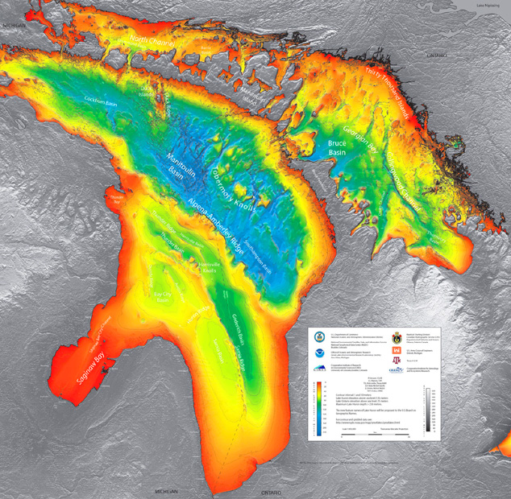
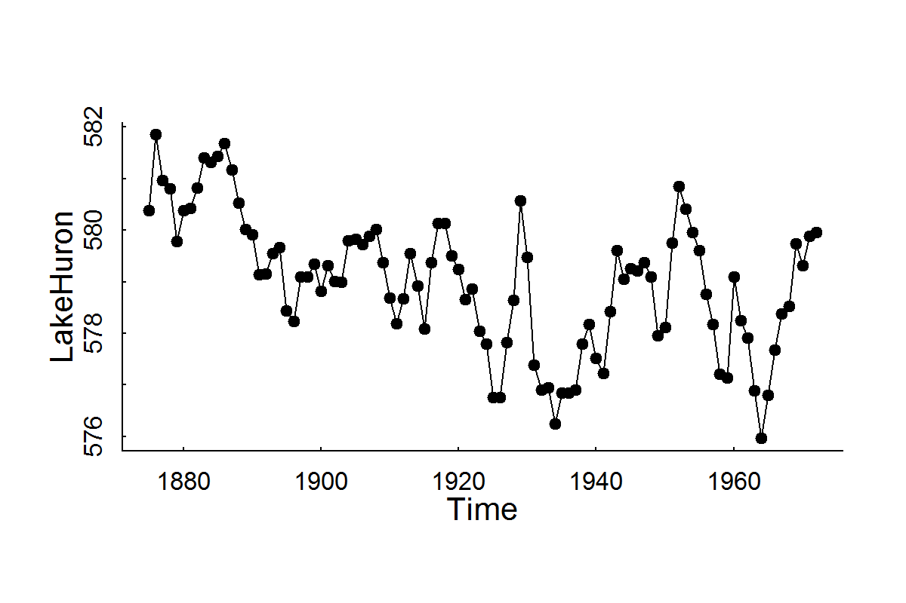
Question: Can we identify the trend / seasonal pattern / random fluctuations / make forecasts about CO2 emissions?
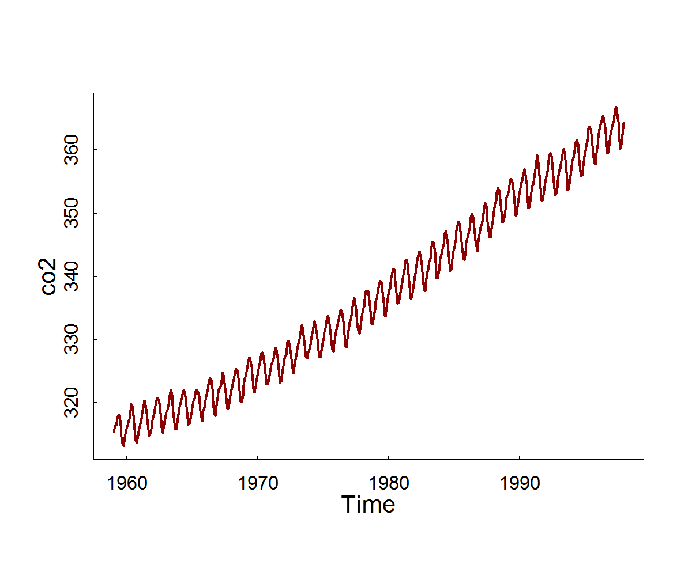
Question: What are the dynamics and relationships within and between lynx and hare numbers?[^1] [^1]: MacLulich Fluctuations in the numbers of varying hare, 1937
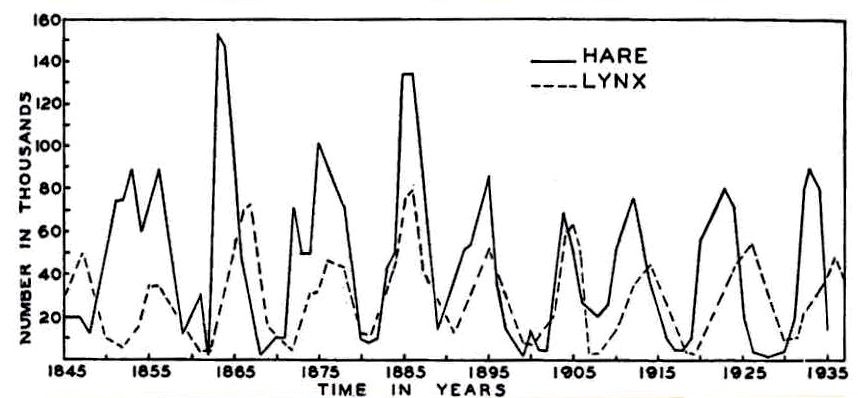
Question: How can we infer unobserved behavioral states from the movements of animals?
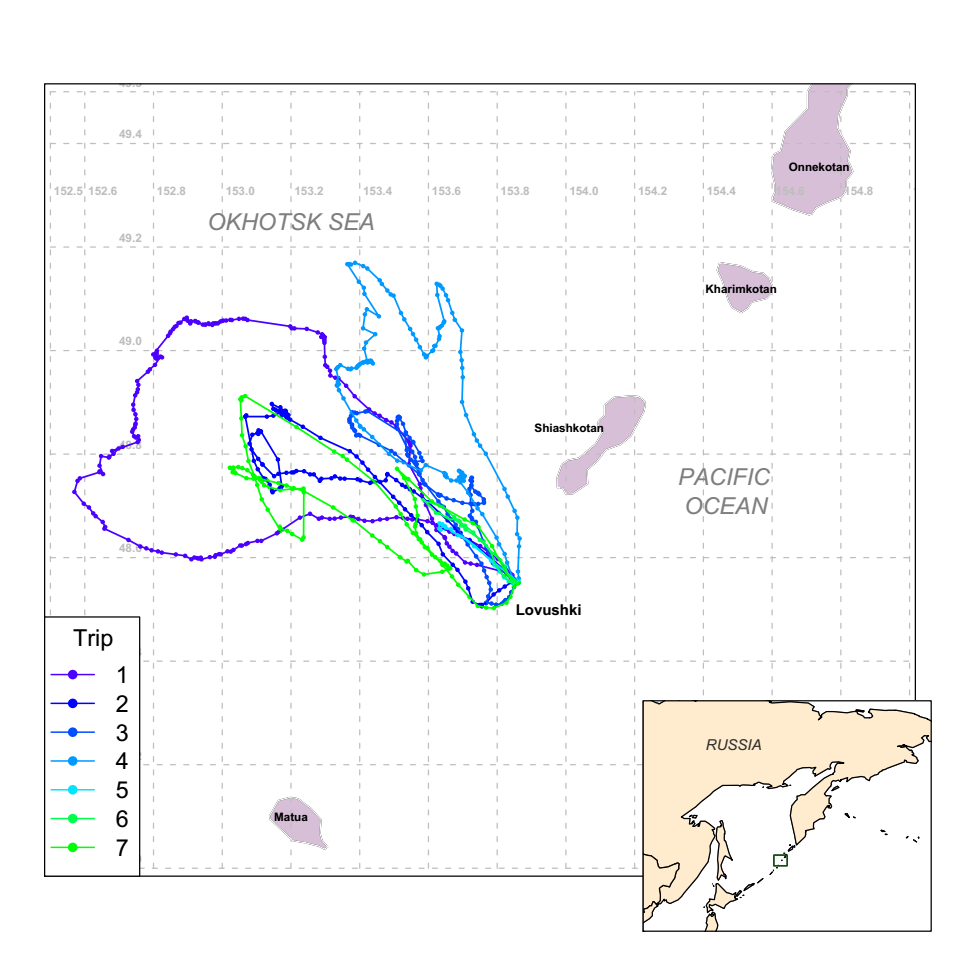
Note: Multidimensional state \(X\), continuous time \(T\)
Question: How can we quantify the time budgets and behaviors of a wolf?
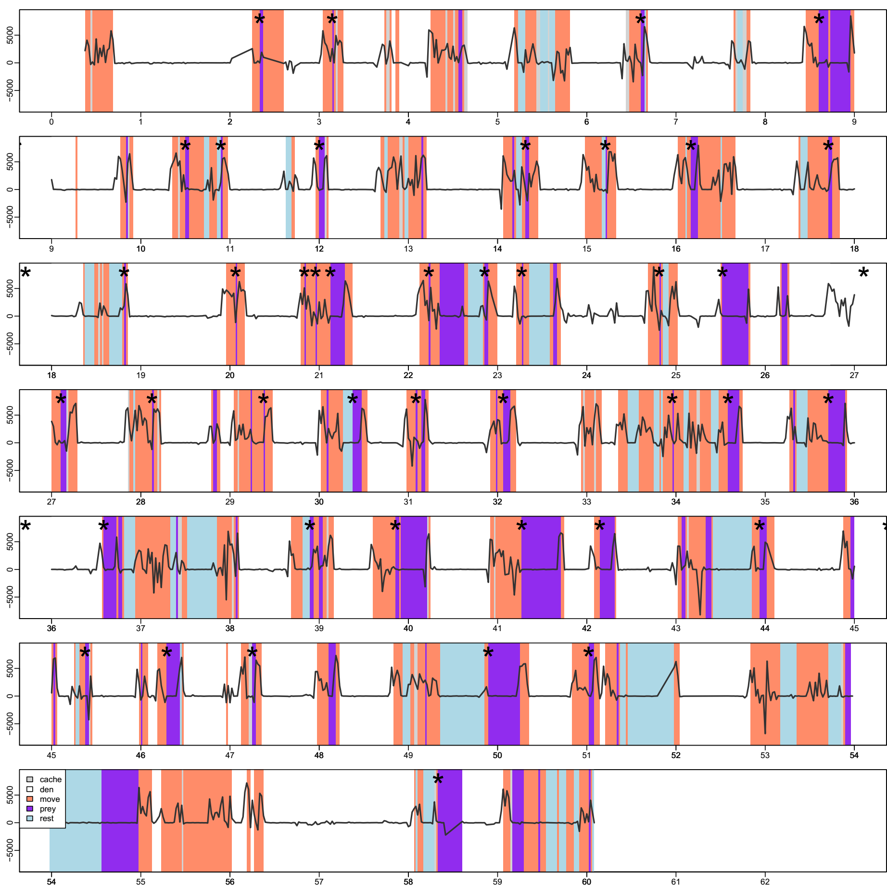
Note: Discrete states \(X\), continuous time \(T\)
9.5 Some objectives of time-series analysis
- Characterizing a random process
- Identifying trends, cycles, random structure
- Identifying and estimating the stochastic model for the time series
- Inference
- Accounting for lack of independence in linear modeling frameworks
- Avoiding FALSE INFERENCE!
- Learning something important the autocorrelation structure
- Forecasting
9.6 Concept 1: Autocorrelation
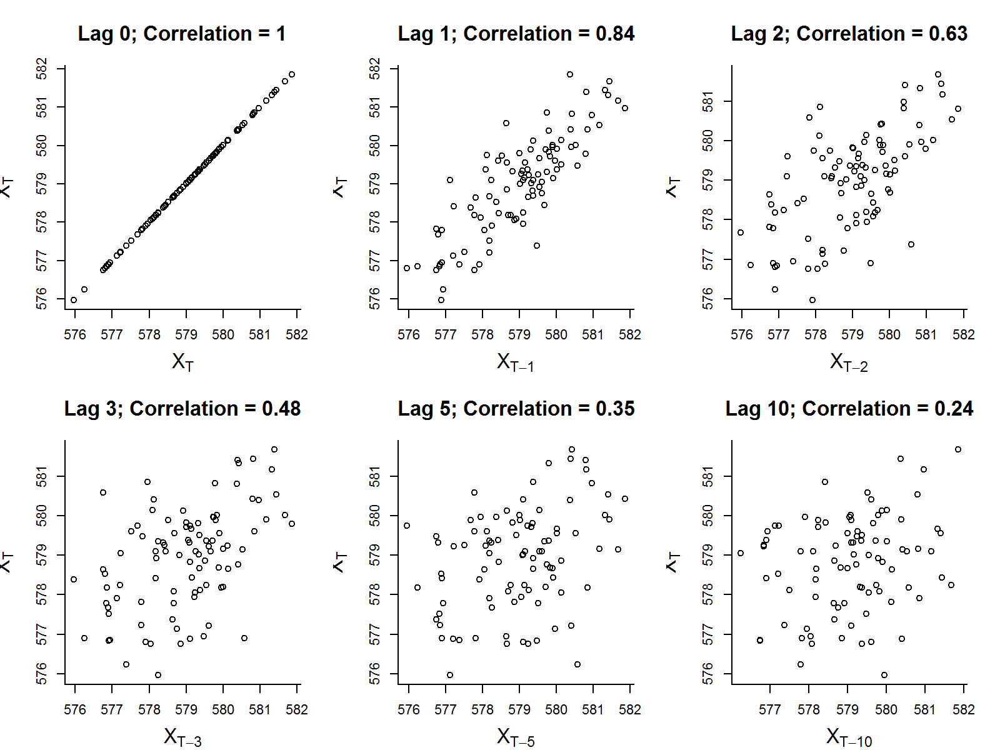
- Autocovariance function: \(\gamma(h) = \text{cov}[X_t, X_{t-h}]\)
- Autocorrelation function (acf): \(\rho(h) = \text{cor}[X_t, X_{t+h}]\)
9.6.1 Estimates
- Sample mean: \[\overline{X} = {1 \over n}\sum_{t=1}^n X_t\]
- Sample autocovariance: \[\widehat{\gamma}(h) = {1 \over n} \sum_{t=1}^{n-|h|} (X_{t+|h|} - \overline{X})(X_t - \overline{X})\]
- Sample autocorrelation: \[\widehat{\rho}(h) = {\widehat{\gamma}(h) \over \widehat{\gamma}(0)}\]
9.6.2 Sample autocorrelation
in R:
acf(X)
Lake Huron
Gives an immediate sense of the significance / shape of autocorrelation
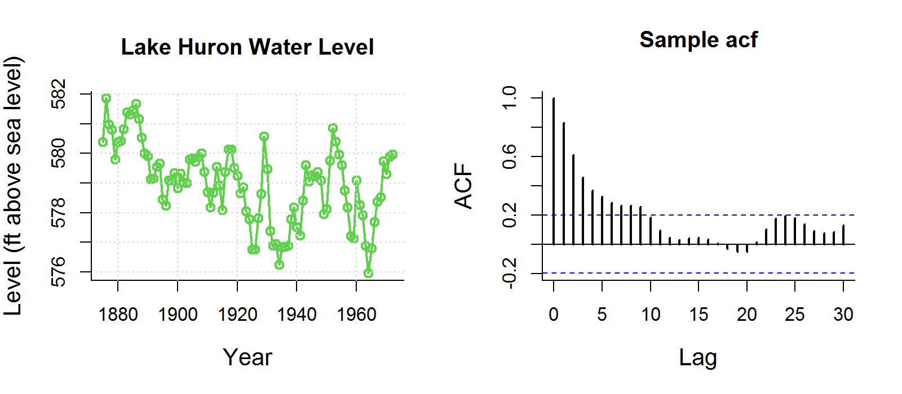
White Noise
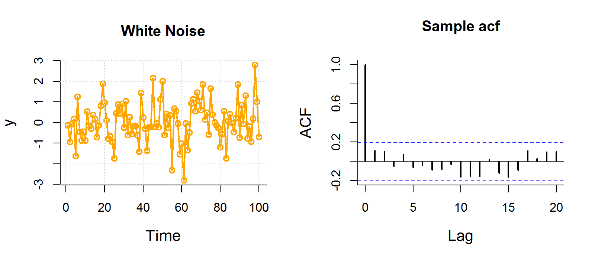
Note, blue dashed line is \(1.96 \over \sqrt{n}\), because expected sample autocorrelation for white noise is \(\sim {\cal N}(0,1/n)\)
Lynx
ACF provides instant feel for periodic patterns.
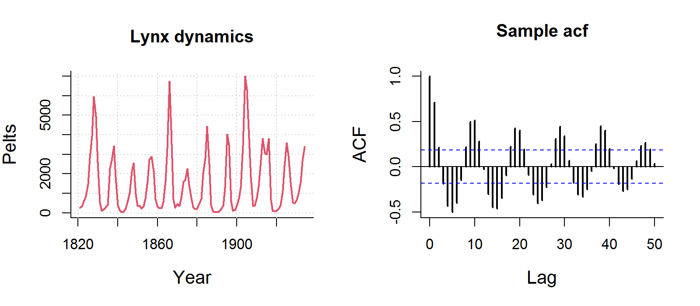
CO2
Not useful for time-series with very strong trends!

9.7 The autoregression model
First order autoregressive model: AR(1): \[ X_t = \phi_1 \,X_{t-1} + Z_t\] where \(Z_t \sim {\cal N}(0, \sigma^2)\) is White Noise (time series jargon for i.i.d.).
Second order autoregressive: AR(2): \[ X_t = \phi_1 \,X_{t-1} + \phi_2 \, X_{t-2} + Z_t\]
\(p\)-th order autoregressive model: AR(p): \[ X_t = \phi_1 \,X_{t-1} + \phi_2 \, X_{t-2} + ... + \phi_p Z_{t-p} + Z_t \]
Note: these models assume \(\text{E}[X] = 0\). Relaxing this gives (for AR(1)):
$$ {X_t = \phi_1 \,(X_{t-1}-\mu) + Z_t + \mu} $$Pause: to compute \(\text{E}[X]\), \(\text{var}[X]\) and \(\rho(h)\) for an \(X \sim AR(1)\) on the board.
9.7.1 AR(1): Theoretical predictions
\[ \rho(h) = \phi_1^h \]
If the sample acf looks exponential - probably an AR(1) model.
9.7.2 Fitting Lake Huron AR(1)
Fit: \({X_t = \phi_1 (\,X_{t-1} - \mu) + Z_t + \mu}\)\
LakeHuron.lm <- lm(LakeHuron[-1] ~ LakeHuron[-length(LakeHuron)])
plot(LakeHuron[-length(LakeHuron)],LakeHuron[-1])
abline(LakeHuron.lm, col=3, lwd=2)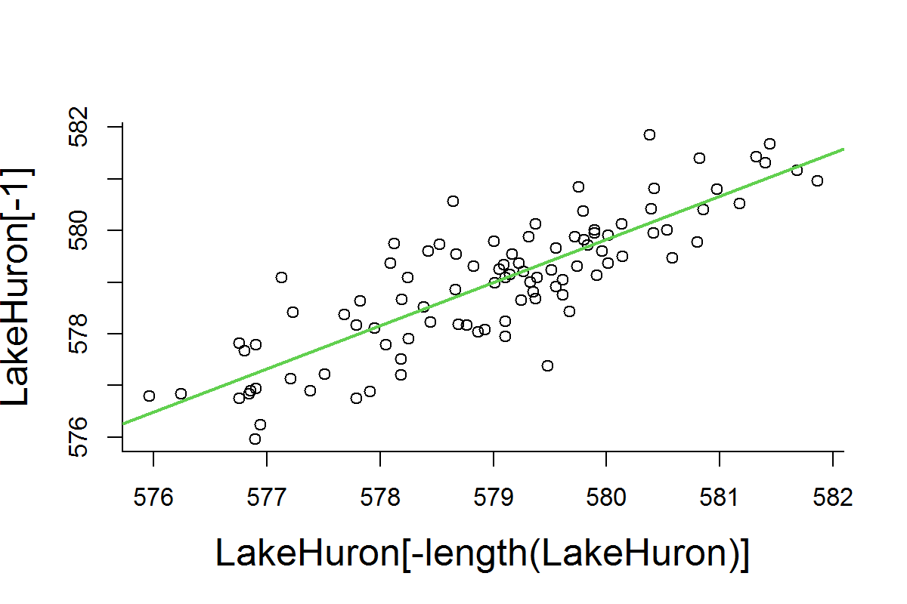
Note: \(R^2 = 0.70\), i.e. about 70% percent of the variation observed in water levels is explained by previous years.
9.7.3 Diagnostic plots
Check regression assumptions: Homoscedastic, Normal, Independent - note use of acf function to test assumption of independence!
9.7.4 But what about the trend?
Decomposition with trend:
\[ {Y_t = m_t + X_t} \]
where:
- {\(m_t\) } is the slowly varying trend component
- {\(X_t\) } is a random component
- {\(X_t\)} can have serial autocorrelation
- \(\text{E}[X_t] = 0\)
- \(X_t\) must be stationary.
Definition of Stationary
- \(X_t\) is a Stationary process if \(\text{E}[X_t]\) is independent of \(t\)
- \(X_t\) is what is left over after the time-dependent part is removed
9.7.5 Estimating a trend and correlation to Lake Huron
\[Y_{T} = \beta_0 + \beta_1 T + X_{T}\]
\[ X_{T} = \phi_1 X_{T-1} + Z_T \]
plot(LakeHuron, ylab="Level (ft above sea level)", xlab="Year", main="Lake Huron Water Level", col=3, lwd=2)
grid()
lines(LakeHuron, col=3, lwd=1.5)
LH.trend <- lm(LakeHuron~time(LakeHuron))
abline(LH.trend, lwd=2, col="darkred")
acf(residuals(LH.trend), main = "ACF of trend", lag.max=20)
X <- residuals(LH.trend)
X.lm <- lm(X[-1]~X[-length(X)])
summary(X.lm)
Call:
lm(formula = X[-1] ~ X[-length(X)])
Residuals:
Min 1Q Median 3Q Max
-1.95881 -0.49932 0.00171 0.41780 1.89561
Coefficients:
Estimate Std. Error t value Pr(>|t|)
(Intercept) 0.01529 0.07272 0.21 0.834
X[-length(X)] 0.79112 0.06590 12.00 <2e-16 ***
---
Signif. codes: 0 '***' 0.001 '**' 0.01 '*' 0.05 '.' 0.1 ' ' 1
Residual standard error: 0.7161 on 95 degrees of freedom
Multiple R-squared: 0.6027, Adjusted R-squared: 0.5985
F-statistic: 144.1 on 1 and 95 DF, p-value: < 2.2e-16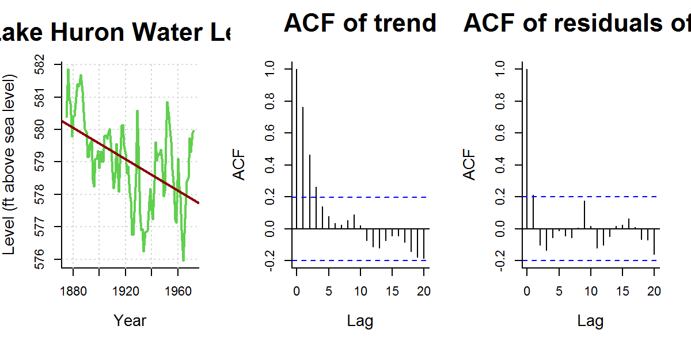
Results:
- \(\widehat{\beta_0} = 625\) ft
- \(\widehat{\beta_1} = -0.024\) ft/year
- \(\widehat{\phi_1} = 0.79\)
- \(\widehat\sigma^2 = 0.513\) ft\(^2\)
9.7.6 Estimating a trend and correlation to Lake Huron
9.7.6.1 Version 1: Two-step
LH.trend <- lm(LakeHuron ~ time(LakeHuron))
X <- residuals(LH.trend)
X.lm <- lm(X[-1]~X[-length(X)])
summary(X.lm)$coef Estimate Std. Error t value Pr(>|t|)
(Intercept) 0.01528513 0.07272035 0.2101905 8.339691e-01
X[-length(X)] 0.79111798 0.06590223 12.0044198 9.501693e-21Note the simple linear regression gives a HIGHLY significant result for time.
9.7.6.2 Version 2: One step
with generalized least squares (gls):
require(nlme)
LH.gls <- gls(LakeHuron ~ time(LakeHuron),
correlation = corAR1(form=~1))
summary(LH.gls)$tTable Value Std.Error t-value p-value
(Intercept) 616.48869320 24.36263217 25.304683 2.944221e-44
time(LakeHuron) -0.01943459 0.01266414 -1.534616 1.281674e-01- Correlation coefficient: \(\phi = 0.8247\)
- Regression slope: \(\beta_1 = -0.0194\) - (p-value: 0.13)
WHAT HAPPENED!? The TIME effect is not significant in this model! Does this mean that there is no trend in Lake Huron levels?
9.7.7 Generalized least squares
What DOES ``generalized least squares’’ mean?
9.7.7.1 Some theoretical background:
Linear regession (“ordinary least squares”):
\[y = {\bf X \beta} + \epsilon\]
\(y\) is \(n \times 1\) response, \({\bf X}\) is \(n \times p\) model matrix; \(\beta\) is \(p \times 1\) vector of parameters, \(\epsilon\) is \(n\times 1\) vector of errors. Assuming \(\epsilon \sim {\cal N}(0, \sigma^2 {\bf I}_n)\) (where \({\bf I}_n\) is \(n\times n\) identity matrix) gives {} estimator of \(\beta\):
\[\hat{\beta} = ({\bf X}'{\bf X})^{-1}{\bf X}'y \]
\[V(\hat{\beta}) = \sigma^2 ({\bf X}'{\bf X})^{-1}\]
Solving this is the equivalent of finding the \(\beta\) that minimizes the Residual Sum of Squares:
\[ RSS(\beta) = \sum_{i=1}^n (y_i - {\bf X}_i \beta)^2\]
Assume more generally that \(\epsilon \sim {\cal N}(0, \Sigma)\) has nonzero off-diagonal entries corresponding to correlated errors. If \(\Sigma\) is known, the log-likelihood for the model is maximized with:
\[\hat{\beta}_{gls} = ({\bf X}\Sigma^{-1}{\bf X})^{-1} {\bf X} \Sigma^{-1}{\bf y}\]
For example, when \(\Sigma\) is a diagonal matrix of unequal error variances (heteroskedasticity), then \(\hat{\beta}\) is the weighted-least-squares (WLS) estimator.
In a real application, of course, \(\Sigma\) is not known, and must be estimated along with the regression coefficients \(\beta\) … But there are way too many elements in \(\Sigma\) - (this many: $ n (n+1) / 2 $).
A large part of dealing with dependent data is identifying a tractable, relatively simple form for that residual variance-covariance matrix, and then solving for the coefficients.
This is: generalized least squares} (GLS)
9.7.8 Visualizing variance-covariance matrices:
Empirical \(\Sigma\) matrix and theoretical \(\Sigma\) matrix for residuals\
# Empirical Sigma
res <- lm(LakeHuron~time(LakeHuron))$res
n <- length(res); V <- matrix(NA, nrow=n, ncol=n)
for(i in 1:n) V[n-i+1,(i:n - i)+1] <- res[i:n]
ind <- upper.tri(V); V[ind] <- t(V)[ind]
# Fitted Sigma
sigma.hat <- LH.gls$sigma
phi.hat <- 0.8
require(lattice)
V.hat <- outer(1:n, 1:n, function(x,y) phi.hat^abs(x-y))require(fields); image.plot(var(V)); image.plot(sigma.hat*V.hat)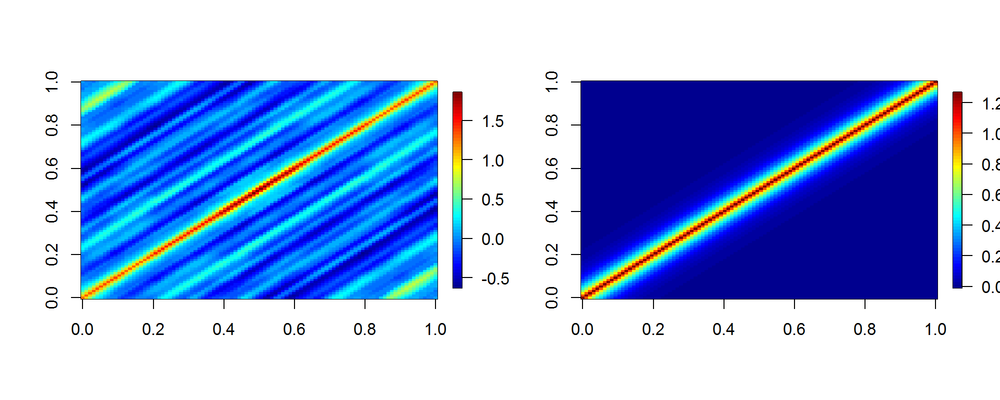
9.7.9 How to determine the order of an AR(p) model?
The base ar() function, which uses AIC.
Raw lake Huron data:
ar(LakeHuron)
Call:
ar(x = LakeHuron)
Coefficients:
1 2
1.0538 -0.2668
Order selected 2 sigma^2 estimated as 0.5075Residuals of time regression:
Call:
ar(x = LH.lm$res)
Coefficients:
1 2
0.9714 -0.2754
Order selected 2 sigma^2 estimated as 0.501Or you can always regress by hand against BOTH orders:
Call:
lm(formula = LH.lm$res[3:n] ~ LH.lm$res[2:(n - 1)] + LH.lm$res[1:(n -
2)])
Residuals:
Min 1Q Median 3Q Max
-1.58428 -0.45246 -0.01622 0.40297 1.73202
Coefficients:
Estimate Std. Error t value Pr(>|t|)
(Intercept) -0.007852 0.069121 -0.114 0.90980
LH.lm$res[2:(n - 1)] 1.002137 0.097215 10.308 < 2e-16 ***
LH.lm$res[1:(n - 2)] -0.283798 0.099004 -2.867 0.00513 **
---
Signif. codes: 0 '***' 0.001 '**' 0.01 '*' 0.05 '.' 0.1 ' ' 1
Residual standard error: 0.6766 on 93 degrees of freedom
Multiple R-squared: 0.6441, Adjusted R-squared: 0.6365
F-statistic: 84.17 on 2 and 93 DF, p-value: < 2.2e-16In either case, strong evidence of a NEGATIVE second-order correlation. (note \(\phi_1 > 1\)!)
9.7.10 Fitting an AR(2) model with gls
\[Y_i = \beta_0 + \beta_1 T_i + \epsilon_i\]
\[\epsilon_i = AR(2)\]
require(nlme)
LH.gls2 <- gls(LakeHuron ~ time(LakeHuron), correlation = corARMA(p=2))
summary(LH.gls2)Generalized least squares fit by REML
Model: LakeHuron ~ time(LakeHuron)
Data: NULL
AIC BIC logLik
221.028 233.8497 -105.514
Correlation Structure: ARMA(2,0)
Formula: ~1
Parameter estimate(s):
Phi1 Phi2
1.0203418 -0.2741249
Coefficients:
Value Std.Error t-value p-value
(Intercept) 619.6442 17.491090 35.42628 0.0000
time(LakeHuron) -0.0211 0.009092 -2.32216 0.0223
Correlation:
(Intr)
time(LakeHuron) -1
Standardized residuals:
Min Q1 Med Q3 Max
-2.16624672 -0.57959971 0.01070681 0.61705337 2.03975934
Residual standard error: 1.18641
Degrees of freedom: 98 total; 96 residualCorrelation coefficients: - \(\phi_1 = 1.02\)\ - \(\phi_2 = -0.27\)\
Regression slope: \ - \(\beta_1 = -0.021\) - p-value: 0.02\
So …. by taking the second order autocorrelation into account the temporal regression IS significant!?
9.7.11 Comparing models …
LH.gls0.1 <- gls(LakeHuron ~ 1, correlation = corAR1(form=~1), method="ML")
LH.gls0.2 <- gls(LakeHuron ~ 1, correlation = corARMA(p=2), method="ML")
LH.gls1.1 <- gls(LakeHuron ~ time(LakeHuron), correlation = corAR1(form=~1), method="ML")
LH.gls1.2 <- gls(LakeHuron ~ time(LakeHuron), correlation = corARMA(p=2), method="ML")
anova(LH.gls0.1, LH.gls0.2, LH.gls1.1, LH.gls1.2) Model df AIC BIC logLik Test L.Ratio p-value
LH.gls0.1 1 3 219.1960 226.9509 -106.5980
LH.gls0.2 2 4 215.2664 225.6063 -103.6332 1 vs 2 5.929504 0.0149
LH.gls1.1 3 4 218.4502 228.7900 -105.2251
LH.gls1.2 4 5 212.3965 225.3214 -101.1983 3 vs 4 8.053612 0.0045THe lowest AIC - by a decent-ish margin - is the second order model with lag.
Note the non-default method = "ML" means that we are Maximizing the Likelihood (as opposed to the default, faster REML - restricted likelihood - which fits parameters but is harder to compare models with)
Newest conclusions:
- The water level in Lake Huron IS dropping, and there is a high first order and significant negative second-order auto-correlation to the water level.
- Even for very simple time-series and questions about simple linear trends … it is easy to make false inference (both see patterns that are not there, or fail to detect patterns that are there) if you don’t take auto-correlations into account!